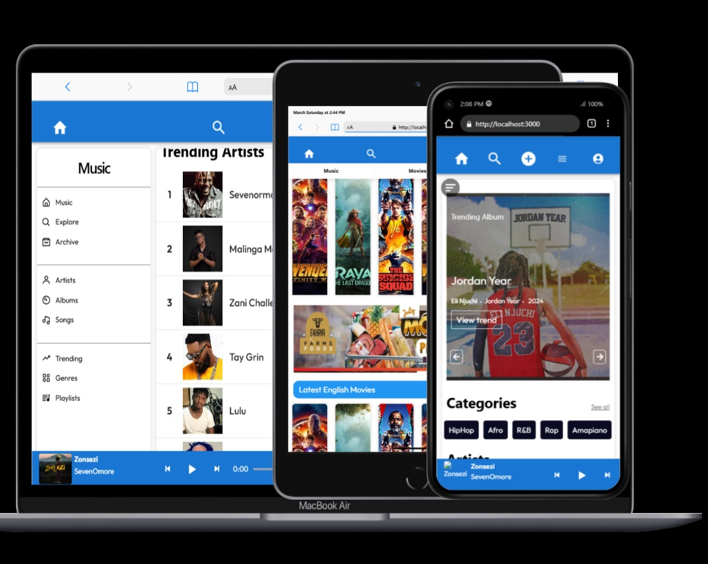
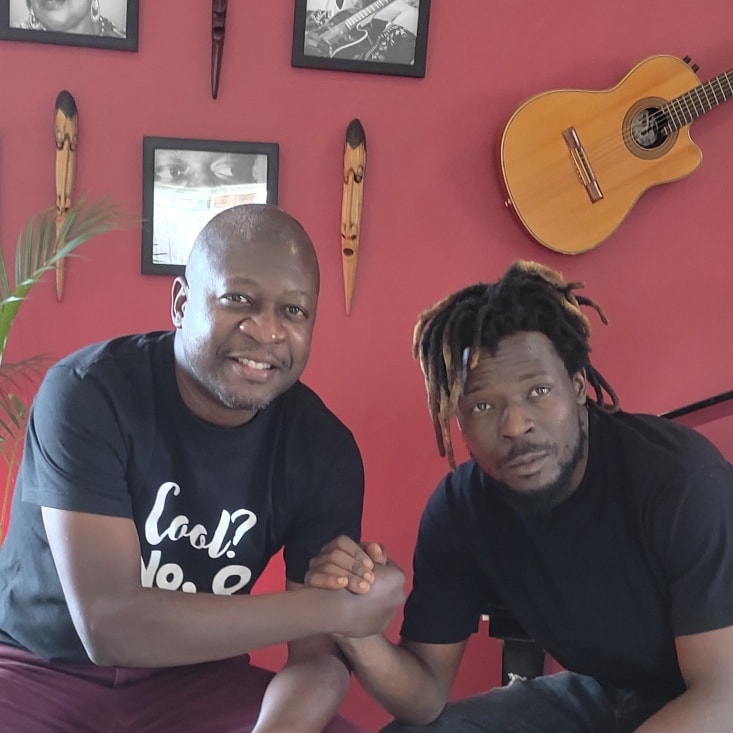

Projects
Urban Link Arts Village (ULAVI) is deeply committed to fostering holistic community development through a diverse array of impactful projects. Recognizing the transformative power of art, ULAVI's initiatives are carefully designed to promote artistic development, ensure the preservation and celebration of Malawi's rich cultural heritage, and empower communities by addressing pressing social needs. ULAVI aims to create sustainable pathways for artists and artisans, providing them with the necessary tools, skills, and platforms to thrive. By focusing on education, mentorship, and the creation of economic opportunities, ULAVI's projects strive to unlock the creative potential within individuals and communities, driving positive change and contributing to a more vibrant and culturally rich society.
Art Farming
A 3-month talent development initiative designed to empower youths aged 16-24 through structured programs. This project focuses on nurturing creativity and artistic skills, providing training in areas such as music production, digital literacy, video production, and photography. The project uses a farming metaphor, taking participants through stages from "Nursery Preparation" to "Market Placement".
Programs
AI, Data & Coding Foundations: This program introduces students to artificial intelligence, coding, and data literacy
"Programming is logic based creativity by making complex patterns of code"
 Audio
Production: This program focuses on audio production and beat making
Audio
Production: This program focuses on audio production and beat making
"Music is the art of arranging sounds in time to produce a composition through the elements of melody, harmony, rhythm, and timbre."
 Digital
Literacy: This program covers graphic design and web development
Digital
Literacy: This program covers graphic design and web development
"It is the use of visual elements to communicate ideas, combining typography, imagery, and layout to create impactful designs."
 Video
Production: This program involves video shooting and editing
Video
Production: This program involves video shooting and editing
"Video production is a creative process that combines visual storytelling, cinematography, and editing to create engaging moving image content"
 Photography:
This program focuses on the art of capturing images
Photography:
This program focuses on the art of capturing images
"It is the practice of capturing light to create images, preserving moments and expressing perspectives through visual composition."
Digital Art & Online Exhibition Platform
Developed through the creation of urbanlinksmalawi.com, this initiative is designed to support Malawian artists by providing a dedicated digital space to showcase their work and connect with both local and international art markets. Recognizing the increasing importance of online platforms in the arts, ULAVI aims to bridge the digital divide and offer artists a dynamic avenue for growth, connection, and recognition. The platform will serve as a central hub where artists can manage their portfolios, gain visibility, and expand their reach to a wider audience.
For the launch of urbanlinksmalawi.com, anticipated on April 1st, 2025, the platform will initially feature artist portfolios, virtual galleries, and online exhibitions focusing on music, movies, and TV. This initial focus will allow for a streamlined and effective launch, with plans to expand into other artistic categories in subsequent phases. In addition to these core features, urbanlinksmalawi.com will also provide valuable resources for artists, including guidance on selling artwork, licensing their creations, and leveraging digital marketing strategies to promote their work and build sustainable careers in the arts
Art Law Initiative
The Art Law Initiative is a crucial component of ULAVI's commitment to supporting the professional development and protecting the rights of artists and creative professionals in Malawi. Recognizing that the legal landscape surrounding artistic creation can be complex and challenging, this initiative aims to empower artists with the knowledge and resources they need to navigate legal issues effectively. By providing access to legal education, consultations, and comprehensive resources, ULAVI seeks to foster a more secure and equitable environment for artistic expression and economic sustainability within the creative sector.
This initiative offers a range of services designed to address the specific legal needs of artists. Legal education workshops are conducted to provide artists with foundational knowledge on key legal concepts such as copyright, contracts, and intellectual property. These workshops equip artists with the understanding they need to protect their creative works, negotiate contracts effectively, and assert their rights. In addition to workshops, ULAVI facilitates consultations with legal professionals, offering artists the opportunity to seek personalized advice on their specific legal concerns. Furthermore, an online resource hub is maintained, offering a wealth of legal guidelines, templates, and other practical resources to support artists in their day-to-day professional activities.
Cultural Preservation & Advancement Program
The Cultural Preservation & Advancement Program is a cornerstone of ULAVI's efforts to safeguard and promote Malawi's rich and diverse cultural heritage while also fostering contemporary artistic innovation. Recognizing the importance of preserving traditional art forms and cultural practices, this program is dedicated to ensuring that Malawi's cultural legacy is passed on to future generations. At the same time, the program embraces the dynamism of artistic expression, encouraging the evolution of modern artistic practices that build upon and enrich traditional foundations. Through a combination of educational initiatives, performance opportunities, and community engagement, ULAVI strives to create a vibrant cultural ecosystem that honors the past while embracing the future.
This program encompasses a wide range of activities designed to achieve its dual objectives. Traditional music and dance programs play a central role, providing opportunities for both practitioners and audiences to engage with these vital forms of cultural expression. Heritage conservation projects are undertaken to protect and preserve tangible cultural heritage sites and artifacts, ensuring their accessibility and longevity. Furthermore, the program emphasizes education, performance, artistic innovation, and community participation. Workshops, seminars, and other educational activities are organized to promote cultural awareness and understanding. Performance events showcase both traditional and contemporary artistic talent. Initiatives are also undertaken to foster artistic innovation, encouraging artists to explore new creative avenues while remaining rooted in their cultural heritage. Community participation is actively sought in all aspects of the program, ensuring that cultural preservation and advancement are driven by the community itself.

These projects collectively embody ULAVI's unwavering commitment to fostering artistic development, driving cultural preservation, and achieving meaningful social change through community empowerment. ULAVI envisions art as a powerful catalyst for individual growth, community cohesion, and societal transformation. By providing access to resources, education, and platforms for expression, ULAVI's initiatives aim to cultivate a thriving ecosystem where creativity flourishes, cultural heritage is celebrated, and individuals are empowered to overcome challenges and contribute to the sustainable development of Malawi. Through these diverse and interconnected projects, ULAVI strives to build a more vibrant, inclusive, and culturally rich future for all.
Get Involved